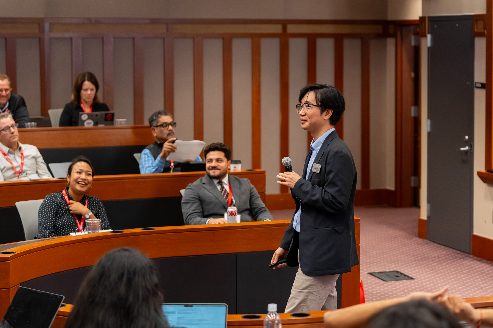

Associate Professor & Denman Scholar
Management & Human Resources
Max M. Fisher College of Business
The Ohio State University
I am an Associate Professor of Management and Human Resources at the Fisher College of Business, The Ohio State University, and the Richard J. and Martha D. Denman Scholar of Principled Leadership Studies. My research focuses on how organizational leaders optimally leverage bottom-up contributions from their members. My work has been published in the Journal of Applied Psychology, Organizational Behavior and Human Decision Processes, Personnel Psychology, Journal of Management, Human Relations, and Human Resource Management, and has been covered in media outlets including the Harvard Business Review, the Wall Street Journal, and the New York Times.
Within the university, I serve as Research Director for the Fisher Leadership Initiative, Faculty Fellow for Academic Leadership in the Office of Academic Affairs, and Faculty Affiliate of the Center on Responsible AI and Governance (CRAIG). I also serve on the editorial boards of Organizational Behavior and Human Decision Processes and the Journal of Applied Psychology.
I have organized multiple scholarly and professional events, including the inaugural Principled Leadership Conference, industry-academic sessions on AI adoption, the inaugural Fisher AI in Business Conference, and the inaugural Fisher AI Research Retreat.
Dr. Lee's teaching is guided by a clear philosophy: graduate education should help professionals make better decisions by translating rigorous scholarship into practical and ethical action. Grounded in evidence-based management, he helps students understand leadership through current scientific research while developing the judgment to apply that evidence thoughtfully in complex organizational contexts. His experiential pedagogy and guided reflection connect theory directly to students' lived work experiences.
A signature feature of his teaching is the Leadership Action Project, which moves beyond exams and abstract cases by asking students to address real workplace challenges. Using a Triangulation of Evidence framework, students integrate peer-reviewed research, expert and peer insights, and internal organizational data to diagnose problems and propose evidence-based solutions. In doing so, they learn not only to study leadership but to practice it—developing skills in data-driven persuasion, strategic influence, and organizational change. Dr. Lee also creates an inclusive, collaborative classroom where diverse perspectives are valued, active participation is expected, and professional confidence grows through mutual respect and peer learning.
His commitment to graduate education is reflected in his receipt of the 2026 Pace Setters Faculty Graduate Teaching Award, Fisher College's highest honor for graduate teaching.
What Students Say
"Professor Lee's kindness and positivity are unmatched. He is beyond prepared for each class, and he cares very much about his students learning and developing. The higher education sector needs more professors like Hun Lee."
"Dr. Lee was a fantastic professor! His course was engaging and fun. It was organized extremely well — materials were easy to find, lectures and slides were easy to follow, and assignments were spaced out very well. He was very responsive to emails and provided helpful guidance. I loved this class!"
"One of the most interactive and engaging classes of my program. Very relevant!"
"It was obvious that Dr. Lee truly cared about student learning and our ability to translate what we learned in class into practice. He was an excellent professor, and I am grateful to have taken this course."
"This is one of the best classes and instructors I have had so far. Dr. Lee is such a great professor. His teaching methods are engaging. He is so kind and approachable. I learned a lot from his instruction, and I really feel like his lessons will shape me into a better leader."
"I felt Professor Hun Lee provided a comprehensive 360-degree learning experience. He genuinely cares about his students and is committed to making a positive impact on their future endeavors."
"I loved the way Prof. Lee engaged our group and encouraged our participation. I will absolutely use what I learned in the class in the future! He clearly loves teaching and wants to improve. This really makes a difference. I truly enjoyed this class."
My research has been covered by major news outlets including the Harvard Business Review, the Wall Street Journal, and the New York Times. Below is a selection of press features.
Interactive slide decks from selected talks and conferences, made publicly available for anyone curious about the research.
Dr. Lee partners with organizations and educational institutions to translate rigorous research on leadership, motivation, and organizational behavior into practical solutions. His work is grounded in evidence-based management: helping leaders and organizations make better decisions by combining scientific research, organizational data, and real-world experience.
What We Can Do Together
Dr. Lee works with organizations to diagnose workplace challenges, design evidence-based interventions, and generate actionable insights from organizational data. His consulting approach is especially valuable for organizations seeking to better understand leadership, employee motivation, engagement, collaboration, organizational change, and the human side of technology and AI adoption.
Past research partners have included organizations such as CJ and Hyundai Mobis, where Dr. Lee has collaborated on projects connecting academic research with pressing organizational needs.
Dr. Lee designs and delivers customized leadership education programs for professional and academic audiences. These programs help participants develop a deeper understanding of leadership while building practical skills in communication, influence, decision-making, and organizational change.
Examples include his leadership curriculum developed for Honda employees and customized leadership education programs for academic leaders at a university. Each program is tailored to the audience's context, combining research-based frameworks, experiential learning, reflection, and applied exercises.
Dr. Lee provides leadership assessments that help individuals and organizations better understand leadership strengths, development opportunities, and growth pathways.
As Research Director of the Fisher Leadership Initiative, Dr. Lee has developed a principled leadership assessment measure (in collaboration with Dr. Bennett Tepper) designed to evaluate leadership through a research-based lens. These assessments can be incorporated into executive education, leadership development programs, coaching conversations, and organizational talent initiatives.
Past Partners & Programs
If you are interested in exploring a collaboration — whether research consulting, leadership education, or assessments — Dr. Lee welcomes the conversation.